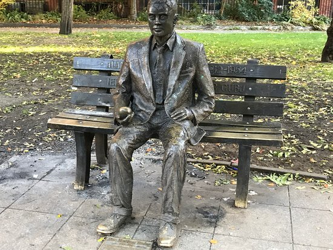
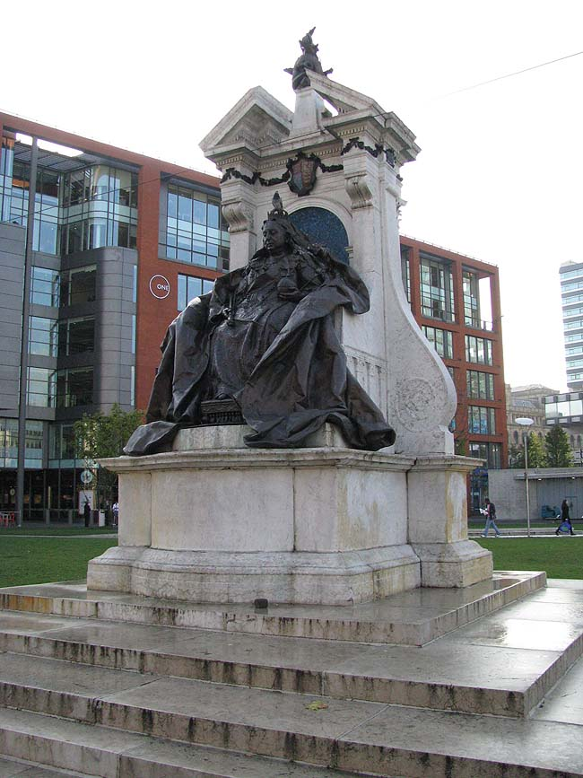
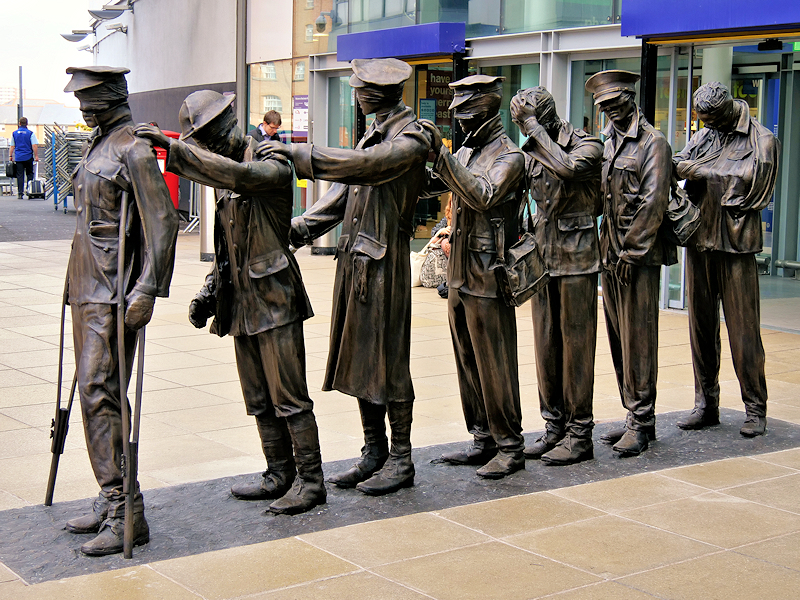

Notable Monuments
The Alan Turing Memorial, situated in Sackville Park in Manchester.
Alan Mathison Turing OBE FRS (23 June 1912 – 7 June 1954) was an English mathematician, computer scientist, logician, cryptanalyst, philosopher, and theoretical biologist.
Turing was highly influential in the development of theoretical computer science, providing a formalisation of the concepts of algorithm and computation with the Turing machine, which can be considered a model of a general-purpose computer. Turing is widely considered to be the father of theoretical computer science and artificial intelligence.
Despite these accomplishments, he was never fully recognised in his home country, if only because much of his work was covered by the Official Secrets Act.
The Queen Victoria Statue, located in Piccadilly Gardens
A large statue of the United Kingdom's longest serving monarch sits proudly in the centre of Piccadilly Gardens.
Queen Victoria reigned over the country from 1837 to 1901. Sculptor Edward Onslow Ford was commissioned to create the tribute to Victoria, with the Queen agreeing to sit for the artist.
Unfortunately the bronze statue of the throned Victoria was not unveiled until 10 months after her death in 1901. An inscription reads: 'Erected by the citizens of Manchester in 1901 to commemorate the completion in 1897 of the sixtieth year of her reign' It adds: 'Let me but bear your love, I'll bear your cares'.
The Victory over Blindness Monument, located on Piccadilly Approach outside the main entrance of Manchester Piccadilly station
The sculpture depicts seven blind figures guiding each other and walking together; their likeness are based upon real veterans who all suffered blindness as a result of action on the frontline. Blind Veterans UK commissioned the sculptor Johanna Domke-Guyot.
It was commissioned by the Blind Veterans UK and was unveiled in October 2018. It is believed to be the only memorial to depict those wounded in the First World War.